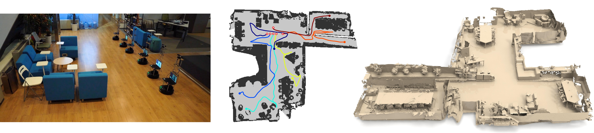

Multi-agent visual SLAM
Problem statement
With the ever-growing abundance of cameras in cars, smartphones and other mobile computing platforms, there has been a lot of progress in the visual flavor of Simultaneous Localization And Mapping (SLAM) [Engel et al. 2015, Mur-Artal et al. 2016]. However, these systems are often designed for single-agent scenarios. For Belgian Defence and partner institutions, extending these systems to allow multi-agent operation with limited computational power would bring a lot of value. Be it for tactical or firefighting operations, knowing one’s location and building (sparse) maps on the fly would bring a significant improvement to situational awareness. An additional challenge is that such systems must be wearable and operated in a hands-free manner. As such, cameras will be mounted on headsets and computing platforms will be limited to smartphones or low-power embedded systems such as the Nvidia Jetson Nano.

Goal
The goals of this master thesis are the following: an existing visual SLAM system using mono or stereo video input [Engel et al. 2015, Mur-Artal et al. 2016] will be extended to allow running with multiple agents with limited computing power. The purpose is 1) to develop an efficient algorithm for multi-agent SLAM, 2) to devise optimal trajectories for mapping in unknown places while maintaining coherent relative location and 3) deal with low bandwidth communication channels (simulated over WiFi) to exchange compressed partial maps or location information.
References
[1] Engel, Jakob & Stückler, Jörg & Cremers, Daniel. (2015). Large-scale direct SLAM with stereo cameras. 1935-1942. 10.1109/IROS.2015.7353631.
[2] Mur-Artal, Raul & Tardos, Juan. (2016). ORB-SLAM2: an Open-Source SLAM System for Monocular, Stereo and RGB-D Cameras. IEEE Transactions on Robotics. PP. 10.1109/TRO.2017.2705103.